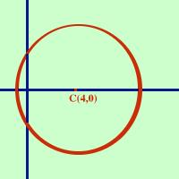

|
Data la seguente equazione indicare se rappresenta una circonferenza ed in caso positivo trovarne il centro ed il raggio x2 + y2 - 8x - 9= 0 So che a= -8 b= 0 c= -9 Come prima cosa devo vedere se sono verificate le condizioni perche' la curva sia una circonferenza:
Basta prendere a e b, dividerli per due e cambiarli di segno xo = 4 yo = 0 C(4,0) ora calcolo il raggio  r = = = Si tratta di una circonferenza di centro C(4,0) e raggio 5 Di fianco la rappresentazione grafica |